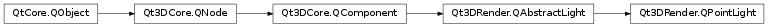

Qt3DRender.QPointLight¶
Synopsis¶
Functions¶
- def
constantAttenuation() - def
linearAttenuation() - def
quadraticAttenuation()
Slots¶
- def
setConstantAttenuation(value) - def
setLinearAttenuation(value) - def
setQuadraticAttenuation(value)
Signals¶
- def
constantAttenuationChanged(constantAttenuation) - def
linearAttenuationChanged(linearAttenuation) - def
quadraticAttenuationChanged(quadraticAttenuation)
Detailed Description¶
Encapsulate a Point Light object in a Qt 3D scene.
-
class
PySide2.Qt3DRender.Qt3DRender.QPointLight([parent=nullptr])¶ Parameters: parent – PySide2.Qt3DCore.Qt3DCore::QNodeConstructs a new
QPointLightwith the specifiedparent.
-
PySide2.Qt3DRender.Qt3DRender.QPointLight.constantAttenuation()¶ Return type: PySide2.QtCore.floatSee also
PySide2.Qt3DRender.Qt3DRender::QPointLight.setConstantAttenuation()
-
PySide2.Qt3DRender.Qt3DRender.QPointLight.constantAttenuationChanged(constantAttenuation)¶ Parameters: constantAttenuation – PySide2.QtCore.float
-
PySide2.Qt3DRender.Qt3DRender.QPointLight.linearAttenuation()¶ Return type: PySide2.QtCore.floatSee also
PySide2.Qt3DRender.Qt3DRender::QPointLight.setLinearAttenuation()
-
PySide2.Qt3DRender.Qt3DRender.QPointLight.linearAttenuationChanged(linearAttenuation)¶ Parameters: linearAttenuation – PySide2.QtCore.float
-
PySide2.Qt3DRender.Qt3DRender.QPointLight.quadraticAttenuation()¶ Return type: PySide2.QtCore.floatSee also
PySide2.Qt3DRender.Qt3DRender::QPointLight.setQuadraticAttenuation()
-
PySide2.Qt3DRender.Qt3DRender.QPointLight.quadraticAttenuationChanged(quadraticAttenuation)¶ Parameters: quadraticAttenuation – PySide2.QtCore.float
-
PySide2.Qt3DRender.Qt3DRender.QPointLight.setConstantAttenuation(value)¶ Parameters: value – PySide2.QtCore.floatSee also
PySide2.Qt3DRender.Qt3DRender::QPointLight.constantAttenuation()
-
PySide2.Qt3DRender.Qt3DRender.QPointLight.setLinearAttenuation(value)¶ Parameters: value – PySide2.QtCore.floatSee also
PySide2.Qt3DRender.Qt3DRender::QPointLight.linearAttenuation()
-
PySide2.Qt3DRender.Qt3DRender.QPointLight.setQuadraticAttenuation(value)¶ Parameters: value – PySide2.QtCore.floatSee also
PySide2.Qt3DRender.Qt3DRender::QPointLight.quadraticAttenuation()
© 2018 The Qt Company Ltd. Documentation contributions included herein are the copyrights of their respective owners. The documentation provided herein is licensed under the terms of the GNU Free Documentation License version 1.3 as published by the Free Software Foundation. Qt and respective logos are trademarks of The Qt Company Ltd. in Finland and/or other countries worldwide. All other trademarks are property of their respective owners.